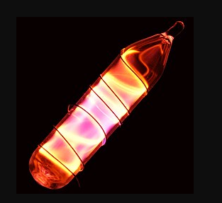
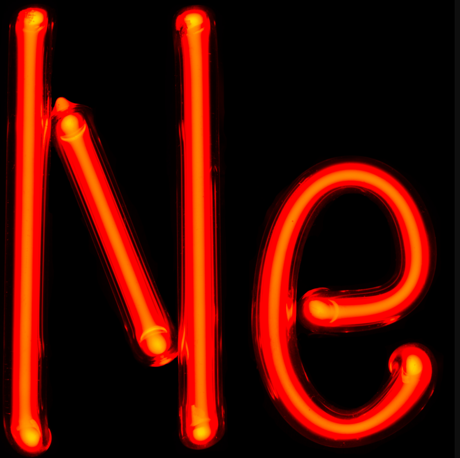

Conheça a história de sua descoberta em Londres, suas propriedades termodinâmicas extremas, comportamento espectral e seu papel crucial na tecnologia moderna e criogenia.
Dados físicos e estruturais oficiais extraídos de referências acadêmicas de química.
(Prótons / Elétrons)
10
(Peso Atômico Relativo)
20,1797 u
(Família Química)
Grupo 18
(Gases Nobres)(Temperatura Sólido-Líquido)
-248,6 °C
(Temperatura Líquido-Gás)
-246,05 °C
(Camadas de Valência)
[He] 2s² 2p⁶
O Néon (português europeu) ou Neônio (português brasileiro) é um gás nobre incolor, inodoro, insípido e quimicamente inerte em condições normais.
Embora seja o quinto elemento mais abundante no universo em massa, ele é extremamente raro na atmosfera da Terra (cerca de 0,0018% em volume). É obtido comercialmente como subproduto da liquefação do ar atmosférico seguida por destilação fracionada.
Sua marca registrada é a espetacular incandescência vermelho-alaranjada brilhante emitida quando submetido a campos elétricos de alta voltagem em tubos de descarga rarefeita.

Estética de descarga elétrica e luminescência

Pesquisa espectroscópica do final do século XIX
O neônio foi descoberto em Londres pelos químicos britânicos Sir William Ramsay e Morris Travers.
Eles isolaram o elemento ao resfriar uma amostra de ar atmosférico até o estado líquido, aquecendo-o lentamente e recolhendo os gases desprendidos nas diferentes faixas de evaporação fracionada.
O nome "néon" veio da raiz grega neos ("novo"). Ao observar a luz vermelha brilhante emitida pelo tubo de descarga do gás recém-isolado, Ramsay relatou ter vivido “uma visão de beleza incrível que gravou-se na memória”.
De letreiros urbanos icônicos a sistemas avançados de refrigeração industrial e ótica quântica.
Sua utilidade mais popular. Tubos de vidro preenchidos com gás néon puro geram um tom avermelhado intenso. Misturado a outros gases e pós fluorescentes, dá origem à famosa estética colorida de placas comerciais e centros urbanos cyberpunk.
A combinação gasosa de hélio e néon produz um feixe laser contínuo de luz vermelha coerente de alta precisão. É largamente aplicado em leitores ópticos de código de barras, holografia laboratorial e alinhamentos industriais.
Na forma líquida, o neônio é um refrigerante criogênico formidável. Ele possui uma capacidade de refrigeração volumétrica cerca de 40 vezes superior à do hélio líquido e mais de 3 vezes superior à do hidrogênio líquido.
Química
Orientação temática e fundamentos científicos.
Programação Web II
Orientação técnica de desenvolvimento front-end e back-end.